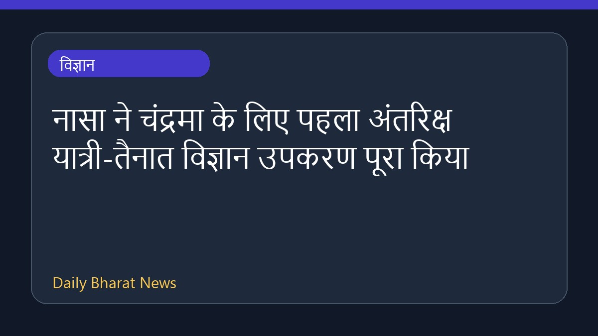

नासा ने चंद्रमा के लिए पहला अंतरिक्ष यात्री-तैनात विज्ञान उपकरण पूरा किया

नासा ने चंद्रमा की सतह पर अंतरिक्ष यात्रियों द्वारा स्थापित किए जाने वाले पहले पेलोड का हार्डवेयर विकास और परीक्षण पूरा कर लिया है। लूनर एनवायरनमेंट मॉनिटरिंग स्टेशन यानी LEMS नामक इस उपकरण को चंद्रमा के दक्षिणी ध्रुव के पास स्थापित किया जाएगा। नासा के इंजीनियरों ने इस हार्डवेयर का निर्माण कार्य पूरा कर लिया है और यह अपने स्थायी गंतव्य के लिए तैयार है। इस मिशन से जुड़े अन्य विवरण अभी सीमित हैं।